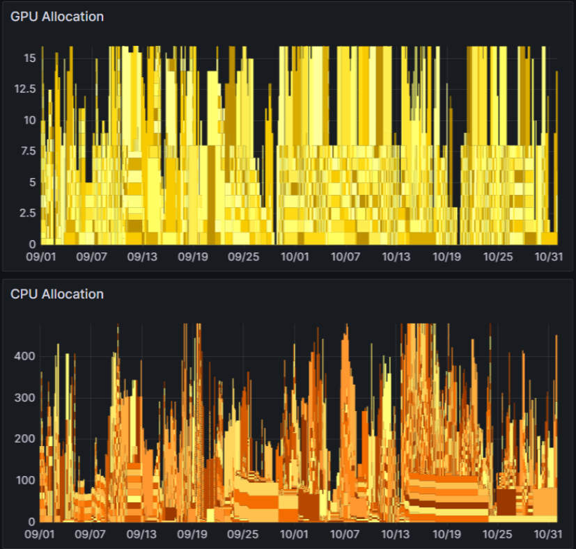
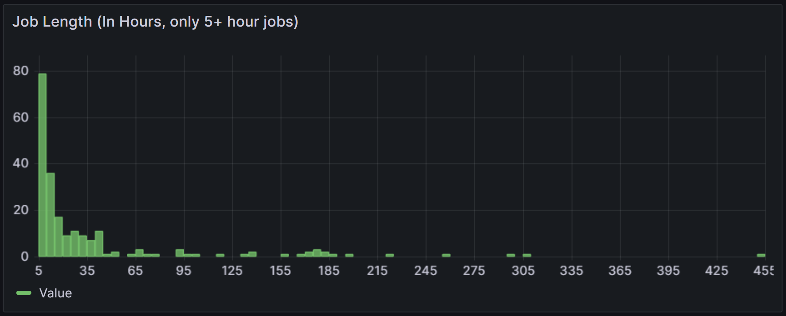
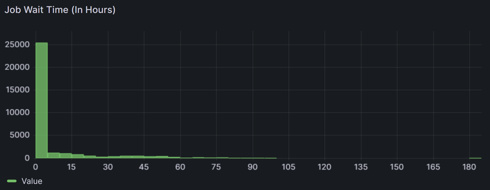

September — October 2025
Summary of GPU and CPU consumption, job behavior, and project-level utilization across YSU-managed NVIDIA DGX clusters.

GPU Allocation
CPU Allocation
Active Users
Usage landed close to the 80% target despite heterogeneous job sizes and queue fragmentation.
Half of CPU capacity remains available on average, signaling an opportunity to onboard CPU-heavy workloads.
Hundreds of jobs waited > 48 hours, suppressing submissions and creating idle windows after congestion clears.


The histogram confirms an overwhelming number of quick iterations, with only a narrow shoulder beyond 10 hours and rare cases over 48 hours.
The sparse tail of the runtime chart captures a handful of 180-hour jobs and a few multi-week outliers that require early planning.
The wait-time histogram validates user feedback: most jobs start quickly, but many still wait several days before resources free up.
The ML Group dominates GPU utilization while CPU-heavy research is concentrated in the Computational Material Science Lab and Chemistry Research Center.
| Lab › Project | GPU Hours | GPU % | CPU Hours | CPU % |
|---|---|---|---|---|
| ML Group | 16,896.1 | 72.13% | 256,800.4 | 36.54% |
| • Molecular Optimization | 1,527.1 | 6.52% | 28,718.4 | 4.09% |
| • 3D Molecules | 4,399.4 | 18.78% | 78,408.0 | 11.16% |
| • Data Selection | 4,287.0 | 18.30% | 87,813.0 | 12.50% |
| • Satellite Foundation Models | 1,917.0 | 8.18% | 27,940.0 | 3.98% |
| • Visual Language Navigation | 1,062.0 | 4.53% | 8,160.0 | 1.16% |
| • Radio Mapping | 338.0 | 1.44% | 7,986.0 | 1.14% |
| • Network Simulation Automation | 97.6 | 0.42% | 5,111.0 | 0.73% |
| • In-Context Learning | 3,268.0 | 13.95% | 12,664.0 | 1.80% |
| Computational Material Science Lab | 828.0 | 3.53% | 70,791.0 | 10.07% |
| Chemistry Research Center | 0.0 | 0.00% | 19,569.0 | 2.78% |
| Physics of Living Systems Lab | 46.3 | 0.20% | 185.0 | 0.03% |
| Total | 17,770.4 | 75.86% | 347,345.4 | 49.43% |
Ran 70k+ CPU hours on material simulations, while GPU-based simulations consumed another 800+ hours.
Consumed 20k CPU hours for simulations using Gauss software.
The Slurm-managed environment provisions 16 GPUs and 480 CPU cores. Resources are sampled every five minutes to monitor allocation, availability, and queue latency.
| Machine | GPUs | CPUs |
|---|---|---|
| NVIDIA DGX A100 | 8 × NVIDIA A100 (40 GB) | 256 × AMD EPYC 7742 cores |
| NVIDIA DGX H100 | 8 × NVIDIA H100 (80 GB) | 224 × Intel Xeon Platinum 8480C cores |